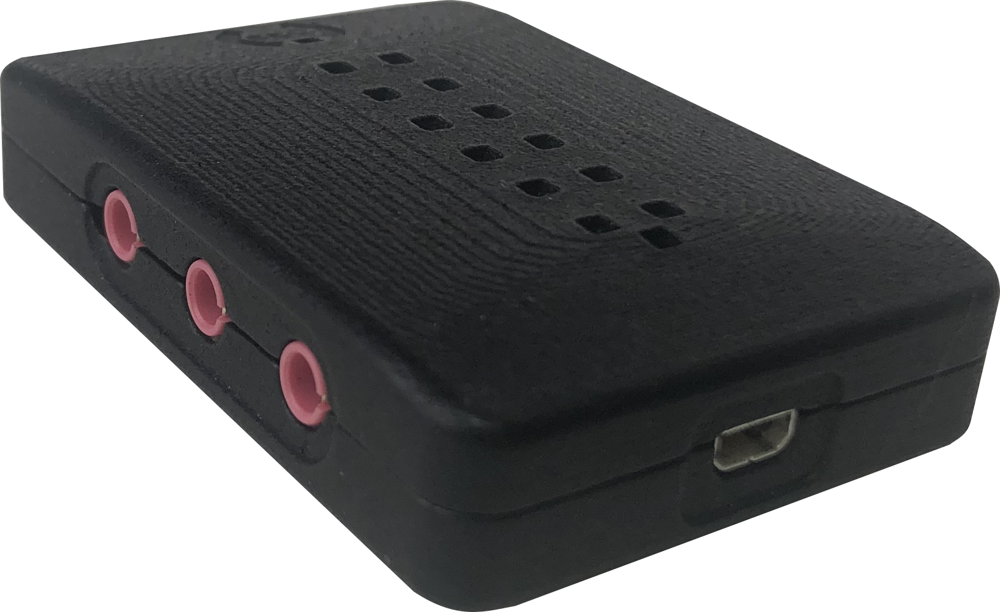
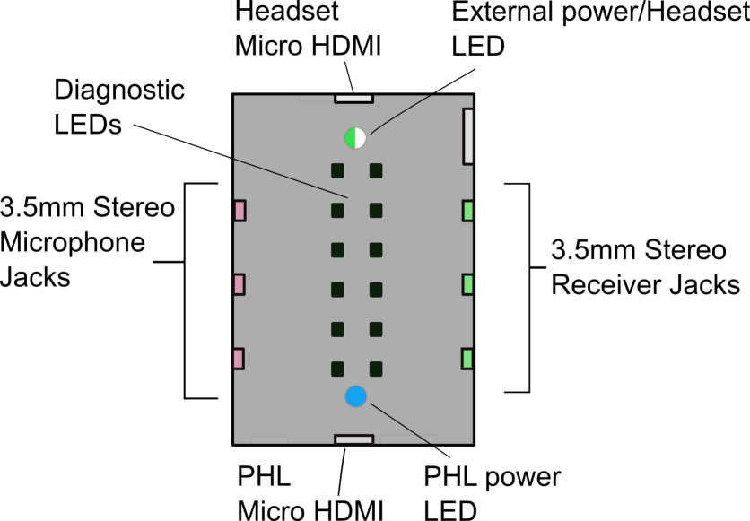
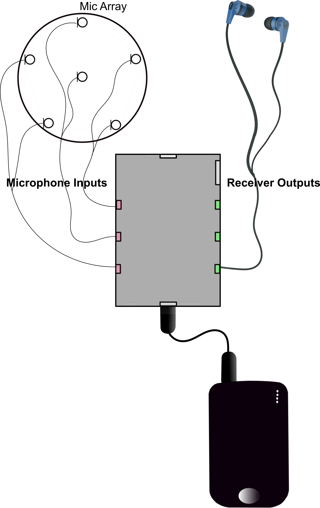
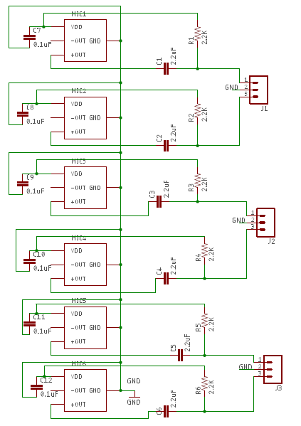
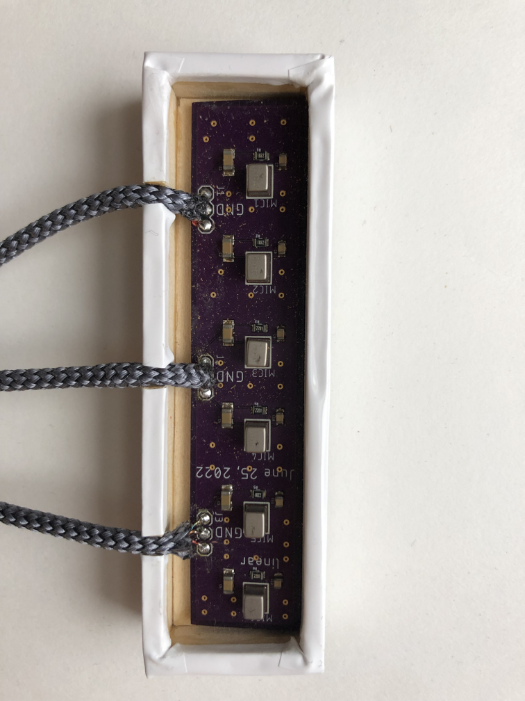
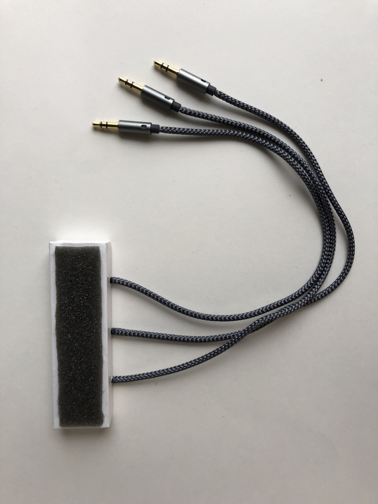
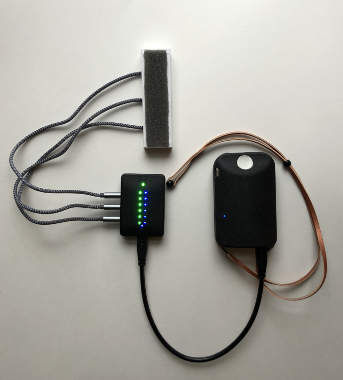
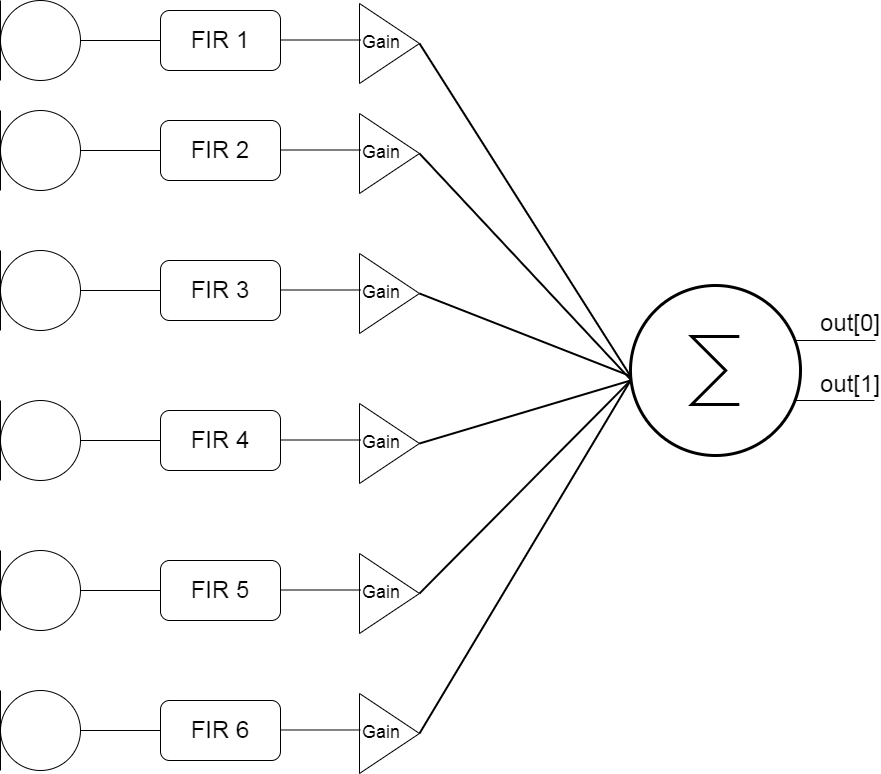

By using the Connection Square with the PHL it’s possible to create systems with experimental mic and speaker configuratons for the PHL.

Connection Square Basics
When connected to the PHL, the Connection Square provides convenient access to the inputs and outputs of the onboard codecs. Custom transducers can then be used to run using the openMHA platform.

Mic Array example
A 6 microphone array was constructed to show how the Connection Square can be used for novel transducer configurations. The configuration here is referred to as ‘PHL Expansion Mode’. The mic array described in this example is actually and endfire array, instead of the circular array shown here.

Hardware
There are 6 MEMS mics (TDK InvenSense ICS-40730) on the board in an endfire array. The bias voltage comes from the Connection Square. Each connector leads to a stereo cable carrying the signals from two mics.

The microphones are spaced approximately 14mm apart in this example. 


Software
This array uses custom software running on the PHL to create a fixed beamformer. The phase and magnitude of each mic signal is adjusted by an FIR filter. A gain stage allows calibration of individual mic sensitivity if that’s required, then the signals are summed. The FIR filters here are actually part of the transducers plugin, originally designed to aid in calibration. The output is sent to both channels of the third output, arbitrarily.

The .cfg file is included here.
1
2
3
4
5
6
7
8
9
10
11
12
13
14
15
16
17
18
19
20
21
22
23
24
25
26
27
28
29
30
31
32
33
34
nchannels_in = 8
fragsize = 64
srate = 24000
iolib=MHAIOalsa
io.in.device=hw:0
io.out.device=hw:0
io.priority=90
# MHA library name
mhalib = mhachain
mha.algos=[route:sort_input transducers route:sort_output]
mha.transducers.plugin_name=mhachain
mha.transducers.mhachain.algos=[gain matrixmixer:mix]
mha.transducers.mhachain.gain.max = 30
mha.transducers.mhachain.gain.gains = [27 27 27 28 27 27]
mha.transducers.mhachain.mix.m = [ [1 1 1 1 1 1];[1 1 1 1 1 1]]
# L1 R1 L2 R1
mha.sort_input.out=[:0 :4 :1 :5 :2 :6]
# Output jacks: L1,R1 L2,R2....
# L1 L2 L3 R1 R2 R3
mha.sort_output.out=[:0 :1 :0 :0 :0 :1 :1 :0]
mha.transducers.calib_in.peaklevel= [ 110 110 110 110 110 110]
mha.transducers.calib_out.peaklevel= [ 110 110]
mha.transducers.calib_in.fir=[ [ -2.0032705e-002 -2.3638943e-002 -2.3407507e-002 -2.7283196e-002 -2.5968680e-002 -2.8455644e-002 -2.2191306e-002 -1.6503569e-002 -1.4049329e-002 -2.5585308e-002 -1.5882651e-002 -3.5499336e-002 -2.1440464e-002 -5.6538020e-002 -3.6359777e-002 -1.5291555e-001 5.7208083e-002 1.3251913e-001 8.7456740e-002 7.5830771e-002 5.7627669e-002 5.0586961e-002 4.1289400e-002 3.7132495e-002 3.1232869e-002 2.9283061e-002 2.4057189e-002 2.4124868e-002 2.1146991e-002 2.1617832e-002 1.8997895e-002 1.9288759e-02]; [-1.2921051e-002 -1.0815475e-002 -1.5027884e-002 -1.2559416e-002 -1.7992861e-002 -1.6032973e-002 -2.6900000e-002 -2.7028918e-002 -1.9084987e-002 -1.0965706e-002 -2.7643674e-002 -9.4356088e-003 -4.0970806e-002 -9.5641182e-003 -9.1450520e-002 1.8218163e-001 1.1474769e-001 -2.7555076e-002 2.0131688e-002 1.8794221e-002 2.6983643e-002 2.0736556e-002 2.3291749e-002 1.7921743e-002 2.0021979e-002 1.4423846e-002 1.8233951e-002 1.3804314e-002 1.5978022e-002 1.1889940e-002 1.3775518e-002 1.0224069e-002 ]; [ -2.9337349e-004 -4.5416671e-003 -3.3179818e-004 -6.0493662e-003 -2.2718896e-003 -1.2668948e-002 -9.0920683e-003 -2.1427272e-002 -2.6266453e-002 -1.8173500e-002 -2.2602410e-003 -2.7233117e-002 1.0890779e-002 -5.1395279e-002 2.2138448e-001 8.1866833e-002 -2.2879966e-002 2.5400160e-002 -3.4029918e-002 -7.1051944e-003 -6.3543145e-003 4.9190927e-003 1.4021763e-003 8.0684528e-003 2.9012123e-003 1.0121262e-002 4.5649655e-003 9.2480286e-003 4.1416286e-003 7.6826227e-003 3.1508372e-003 6.3661305e-003 ]; [ 4.0999047e-003 9.8278190e-003 4.2831620e-003 1.0087164e-002 1.2381191e-003 9.2201579e-003 -1.3835354e-003 3.6794613e-003 -1.0481415e-002 -2.0191043e-002 -1.1562718e-002 2.2952279e-002 -2.0600479e-002 2.3467355e-001 4.6827744e-002 -3.7867854e-002 7.2745060e-003 -2.9214201e-002 4.2173615e-003 -3.4822246e-002 -1.7933332e-002 -1.8313195e-002 -6.8780478e-003 -1.0678976e-002 -2.4369339e-004 -6.3510636e-003 6.6164648e-004 -5.1971393e-003 3.9173786e-004 -4.6541555e-003 5.7634483e-005 -4.4184339e-003]; [ 1.8149771e-002 1.2753766e-002 2.0103743e-002 1.2902069e-002 2.3928415e-002 1.5619104e-002 2.7546069e-002 1.8478333e-002 2.9023099e-002 1.4933712e-002 -6.7112706e-004 1.1533634e-002 2.2702800e-001 -4.3866934e-003 -6.1797826e-002 -1.1285114e-002 -3.6038433e-002 -7.4003964e-003 -2.9795775e-002 -3.8450532e-003 -3.2305392e-002 -2.2590576e-002 -2.4947277e-002 -1.2382691e-002 -1.8982923e-002 -1.0076353e-002 -1.6162127e-002 -8.6911821e-003 -1.3942886e-002 -7.5397178e-003 -1.2074299e-002 -6.5215780e-003]; [ 1.9169444e-002 2.7968630e-002 2.2521196e-002 3.5308552e-002 2.9205967e-002 4.5147640e-002 4.0191016e-002 6.1334387e-002 5.9592067e-002 9.1590206e-002 9.9391086e-002 1.3624531e-001 -1.0326157e-001 -9.3200299e-002 -3.3306135e-002 -4.6919547e-002 -1.9113937e-002 -3.3418932e-002 -1.2274316e-002 -2.7867198e-002 -6.6117267e-003 -2.5818986e-002 -2.1430887e-002 -3.1786255e-002 -2.2647733e-002 -2.8917977e-002 -1.9957765e-002 -2.4863937e-002 -1.6914158e-002 -2.1153852e-002 -1.4252111e-002 -1.8044334e-002]]
cmd=start